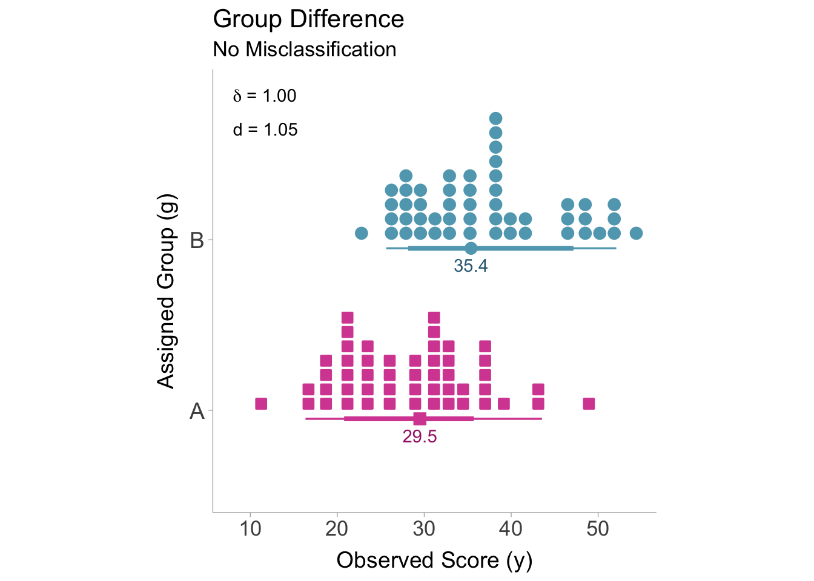
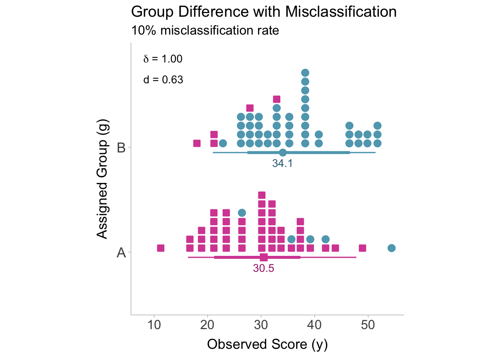

# set seed
set.seed(17)
# 10% misclassification rate
p_mis <- .10
# sample size of 100
nA <- 50
nB <- 50
n = nA + nB
# create a vector of true group values
true_A <- rep('A',nA)
true_B <- rep('B',nB)
true_group <- c(true_A,true_B)
# initialize vectors of observed group membership from true group membership
obs_1_A <- true_A
obs_1_B <- true_B
obs_2_A <- true_A
obs_2_B <- true_B
# add misclassified values to observed group membership
obs_1_A[sample(1:nA,nA*p_mis)] <- 'B'
obs_1_B[sample(1:nB,nB*p_mis)] <- 'A'
obs_2_A[sample(1:nA,nA*p_mis)] <- 'B'
obs_2_B[sample(1:nB,nB*p_mis)] <- 'A'
obs_1_group <- c(obs_1_A,obs_1_B)
obs_2_group <- c(obs_2_A,obs_2_B)6.1 Introduction
Group misclassification describes a situation where true group membership (e.g., people with a disorder) does not perfectly match the observed group membership (e.g., people diagnosed with a disorder). Group misclassification can be considered a type of measurement error where instead of accounting for errors in continuous variables (i.e., unreliability), group misclassification accounts for errors in categorical variables.
6.2 Defining Group Misclassification
Misclassification can be defined as any deviations between true group membership and observed group membership. Let us imagine two arbitrary groups, group \(A\) and group \(B\). In order to identify members of group \(A\) and group \(B\), we have to use some measurement instrument. We can also assume this measurement instrument produces imperfect group classifications, that is, people who are actually in group \(A\) are sometimes assigned group \(B\) and vice versa. We can visualize the performance of the classification procedure with a contingency table between actual group membership (\(G\)) and observed group membership (\(g\)):
| \(G=A\) | \(G=B\) | |
|---|---|---|
| \(g=A\) | \(AA\) | \(BA\) |
| \(g=B\) | \(AB\) | \(BB\) |
We can see from the contingency table that subjects who were correctly classified, would be labeled in the cell block \(AA\) or \(BB\) and those who were misclassified would belong to cells \(BA\) and \(AB\). Therefore we can define the proportion of individuals that are accurately classified as \(p_{\text{acc}} = P(AA) + P(BB)\) whereas the proportion of people misclassified can be defined as \(p_{\text{mis}} = P(AB)+ P(BA)\). A high-quality classifier would would minimize \(p_{\text{mis}}\) and maximize \(p_{\text{acc}}\). Note that the proportion of people misclassified is inversely proportional to the proportion of people accurately classified such that, \(p_{\text{mis}} = 1-p_{\text{acc}}\).
6.3 Classification Reliability
Similar to quantifying reliability in continuous variables by calculating the correlation in parallel sets of observed scores, the same can be done in categorical variables. Instead of a contingency table between observed (\(g\)) and true (\(G\)) group membership, we will instead create a contingency table of two measurements producing two sets of observed group assignments (\(g\) and \(g'\)). Measurements often will take the form of inter-rater assessments, for example, two clinician’s diagnosis of Major Depressive Disorder (MDD) in the same sample of patients.
| \(g=A\) | \(g=B\) | |
|---|---|---|
| \(g'=A\) | \(AA\) | \(BA\) |
| \(g'=B\) | \(AB\) | \(BB\) |
To obtain the reliability of the group assignments, we can calculate the correlation coefficient between \(g\) and \(g'\). Since both variables are categorical, a Pearson correlation coefficient would not be an appropriate correlation estimator, instead, we must compute the phi coefficient. The phi coefficient is often referred to as Matthew’s correlation coefficient and is most frequently used as an index of performance of a binary classifier in machine learning. For the sake of consistency, the phi coefficient will be denoted with the letter \(r\), and thus the reliability (i.e., the correlation between \(g\) and \(g'\)) is denoted with \(r_{gg'}\).
There are a few ways we can calculate the phi coefficient. The first way is to calculate phi directly from the contingency table,
\[ r_{gg'} = \frac{n_{AA}n_{BB}-n_{AB}n_{BA}}{\sqrt{(n_{AA}+n_{BA})(n_{AB}+n_{BB})(n_{AA}+n_{AB})(n_{BA}+n_{BB})}}. \]
Where \(n_{AA}\), \(n_{BB}\), \(n_{AB}\), and \(n_{BA}\) are the number of subjects within their respective cells of the contingency table. If the values of the contingency table are not available, we can calculate the phi coefficient from the \(\chi^2\)-statistic,
\[ r_{gg'} = \sqrt{\frac{\chi^2}{n}}. \]
Where \(n\) is the total sample size. If the \(\chi^2\)-statistic is unavailable, we can approximate the phi coefficient from the accuracy (\(p_{\text{acc}}\)) or the proportion of people misclassified (\(p_{\text{mis}}\)),
\[ r_{gg'} = (2p_{\text{acc}}-1)^2 = (1-2p_{\text{mis}})^2. \]
This approximation assumes that the group sizes are approximately equal and the misclassification rates are approximately equal between groups. Otherwise, \(r_{gg'}\) will be overestimated (Wiernik and Dahlke 2020).
In the chapter 5, we discussed the relationship between reliability and the correlation between observed and true scores. The classification reliability will also be related similarly to the correlation between observed group membership and true group membership (\(r_{gG}\)) such that,
\[ r_{gG}=\sqrt{r_{gg'}}. \]
6.4 Calculating Classification Reliability in R
To calculate classification reliability we will first need data. We can simulate 100 subjects with a group value for three variables: a true group membership and two sets of assigned (observed) group membership. We will set the misclassification rate to 10%.
Then we can generate a contingency table of the two sets of observed group assignments.
# create contingency table of the two observed group memberships
con_table <- table(data.frame(obs_1=obs_1_group,
obs_2=obs_2_group))
print(con_table) obs_2
obs_1 A B
A 40 10
B 10 40Now we can calculate the reliability of the group assignments by extracting the phi coefficient from the contingency table. We can compute it by hand or by using the psych package by William Revelle (2017).
## Strategy 1: Using the {psych} package
# load in psych package (make sure it is installed first: install.packages('psych'))
library(psych)
rgg = phi(con_table,digits = 3)
## Strategy 2: calculate from contingency table values
numerator <- con_table['A','A']*con_table['B','B'] - con_table['A','B']*con_table['B','A']
denominator <- sqrt(con_table['A','A']+con_table['A','B']) *
sqrt(con_table['B','A']+con_table['B','B']) *
sqrt(con_table['A','A']+con_table['B','A']) *
sqrt(con_table['A','B']+con_table['B','B'])
rgg <- numerator / denominator
## Strategy 3: calculate from chi-square test
chi2 <- as.numeric(chisq.test(con_table)$statistic)
rgg <- sqrt(chi2/n)
## Strategy 4: calculate from proportion of people misclassified
rgg <- (1-2*p_mis)^2
print(rgg)[1] 0.646.5 Correcting for Group Misclassification in Standardized Mean Difference
6.5.1 Defining our Estimand
Our quantity of interest is the true population standardized mean difference, \(\delta\), between members of group \(A\) and group \(B\) on the scores of the dependent variable, \(y\). However, the observed sample standardized mean difference (\(d_o\)) is estimating the difference between individuals who are assigned group to \(A\) and group \(B\). Error in the assignment of groups (i.e., group misclassification) will bias the observed correlation by a factor we will label as \(a\). The relationship between the observed study standardized mean difference and the true population standardized mean difference
\[ d_o = a\delta + \varepsilon. \]
Where \(\varepsilon\) denotes the sampling error. Therefore an unbiased (corrected) estimate of the true population correlation would be:
\[ r_c = \frac{r_o}{a}. \]
6.5.2 Artifact Correction for Standardized Mean Difference
The standardized mean differences will become biased when subject’s assigned groups differ from their actual group. This is largely due to the fact that the means of each group are driven closer to one another. Let us suppose that, on average, group \(A\) and group \(B\) score differently on some outcome, \(y\). The true mean of \(y\) for groups \(A\) and \(B\) can be denoted as \(\bar{y}^\text{true}_{A}\) and \(\bar{y}^\text{true}_{B}\), respectively. Nonetheless, when some subjects are erroneously assigned to the wrong group, the observed mean within each group will reflect a weighted average of the respective means. This is due to the fact that the misclassified individuals are being drawn from a population with a different mean. To calculate the mean of the observed groups we must incorporate the true mean of the correctly classified subjects and the misclassified subjects,
\[ \bar{y}^\text{obs}_A = \left(\frac{n_{AA}}{n_{AA}+n_{BA}}\right)\bar{y}^\text{true}_A + \left(\frac{n_{BA}}{n_{AA}+n_{BA}}\right)\bar{y}^\text{true}_B \]
\[ \bar{y}^\text{obs}_A = \left(\frac{n_{BB}}{n_{BB}+n_{AB}}\right)\bar{y}^\text{true}_B + \left(\frac{n_{AB}}{n_{BB}+n_{AB}}\right)\bar{y}^\text{true}_A. \]
From the above equations, it becomes evident that as the number of misclassified individuals increases (\(n_{AB}\) and \(n_{BA}\)), the observed means of each group gradually converge towards each other. As the means converge, the standardized mean difference will correspondingly shift toward zero. To illustrate this phenomenon, the figure below shows the distributions for groups \(A\) and \(B\) without any misclassification. In this case, there is no attenuation of the standardized mean difference.

If some individual’s are assigned to the incorrect group, then we will see attenuation in the standardized mean difference as the means converge. Now lets display a figure showing what happens when the group misclassification rate is 10%. A group misclassification rate of 10% is equivalent to a classification reliability of \(r_{gg'}=.60\).

The bias in the standardized mean difference can be expressed as a function of the classification reliability (\(r_{gg'}\)). To illuminate this bias, we must first convert the true SMD to a point-biserial correlation coefficient (\(\rho\)) using the proportion of individuals in group \(A\) (\(p_A\)) and group \(B\) (\(1-p\)),
\[ \rho = \frac{\delta}{\sqrt{\frac{1}{p(1-p)}-\delta^2}}. \]
Then attenuation of the correlation is similar to the attenuation of correlation coefficients in the section on unreliability (\(r = \rho\sqrt{r_{xx'}}\)). However in this case, we also need to convert the point-biserial correlation to the observed standardized mean difference:
\[ \delta_o =\frac{ \rho \sqrt{r_{gg'}} }{\sqrt{p (p-1)\left(1- r_{gg'} \rho^2\right) }}. \]
It is important to note that for many of the biasing effects and corrections, converting the standardized mean difference to a point-biserial correlation is often a necessary step. However once the corrected point-biserial correlation is obtained, the correlation can then be converted back into a standardized mean difference like we see in the last equation. To correct for bias induced by misclassification we first need to convert the observed standardized mean difference to a point-biserial correlation coefficient by using the observed proportion of the sample that has been assigned to either group \(A\) or group \(B\) (\(p\)). The group proportion \(p\) in the following equations will only show up in the term \(p(1-p)\) so it will not matter which group is used. Converting \(d\) to \(r\):
\[ r_o = \frac{d_o}{\sqrt{\frac{1}{p(1-p)}-d_o^2}}. \]
We can then correct the point-biserial correlation for group misclassification with the square root of the classification reliability:
\[ r_c = \frac{r_o}{\sqrt{r_{gg'}}}. \]
If we also wanted to correct for measurement error in the dependent variable \(y\), we can use the correction formula used in the chapter 4
\[ r_c = \frac{r_o}{\sqrt{r_{gg'}}\sqrt{r_{yy'}}}. \]
Now we can convert the corrected point-biserial correlation into a corrected standardized mean difference (\(d_c\)). When converting back to a standardized mean difference, we need to use the true group proportions, \(p^*\). Although if we are to assume equal misclassification rates between groups, then the observed proportion can be used \(p\):
\[ \hat{\delta} = \frac{r_c}{\sqrt{p^*\left(1-p^*\right)\left(1-r_c^2\right)}} \]
The s converting to a point-biserial correlation, correcting, and converting back to a standardized mean difference. This time we will do this in a single step. Therefore the adjusted sampling variance (squared standard error) can be calculated as,
\[ \sigma^2_{\varepsilon_c} = \frac {\sigma^2_{\varepsilon_o}\left(\frac{r_c}{r_o}\right)^2} {\left(1+d_o^2p[1-p]\right)^2\left(d_o^2+\frac{1}{p(1-p)}\right)p^*(1-p^*)(1-r_c^2)^3} \]
This can be simplified if we assume that misclassification rates are equal between groups,
\[ \sigma^2_{\varepsilon_c} = \frac {\sigma^2_{\varepsilon_o}\left(\frac{\hat{\rho}}{r}\right)^2} {\left(1+d_o^2p[1-p]\right)^3(1-r_c^2)^3} \]
6.6 Correcting for Misclassification in R
We can correct for group misclassification in R by hand or by using the psychmeta package (Dahlke and Wiernik 2019). For our correction, say we got an observed standardized mean difference of \(d = 0.50\) and we calculated the classification reliability to be \(r_{gg'} = .80\). Let us also say that the observed and the true proportion of individuals in one of the groups is \(p=p^*=.40\), therefore the other group would be \(1-p=1-p^*=.60\).
d = .50
rgg = .70
nA = 40
nB = 60Using the psychmeta package
The psychmeta package has a function, correct_d, that is dedicated to correcting standardized mean differences multiple types of artifacts including group misclassification.
# step 1: install and load in psychmeta
# install.packages{'psychmeta'}
library(psychmeta)
# step 2: calculate proportion of group membership
p = nA / (nA + nB)
# p = nB / (nA + nB) # alternative calculation
# step 3: correct d for group misclassification
correct_d(d = d,
rGg = sqrt(rgg), # square root of rgg = rGg
correction = "meas",
pi = p,
pa = p,
n1 = nA+nB,
correct_bias = FALSE)d Values Corrected for Measurement Error:
---------------------------------------------------------------------------------------
value CI_LL_95 CI_UL_95 n n_effective
1 0.618 0.118 1.18 100 66.6The output provides the corrected standardized mean difference (value), the upper and lower 95% confidence intervals (CI_LL_95 and CI_UL_95), the sample size (n), and the effective sample size (n_effective).
Correcting by hand
To calculate the corrected standardized mean difference, we can use the equations in ?sec-corrections.
## Calculate point estimate
# step 1: convert d to r
r = d / sqrt( 1/(p*(1-p)) + d^2)
# step 2: correct r
rho = r / sqrt(rgg)
# step 3: convert r to d
delta = rho / sqrt( p*(1-p)*(1-rho^2) )
## Calculate sampling variance
# step 1: compute sampling variance for r
v_d = (nA+nB)/(nA*nB) + d^2 / (2*(nA+nB))
# step 2: adjust sampling variance for correction
v_delta = (v_d * (rho/r)^2) / ((1 + d^2)^3 * p*(1-p) * (1-rho^2)^3)
# print corrected values
paste0('corrected: d = ',round(delta,3),', var = ', round(v_delta,3))[1] "corrected: d = 0.605, var = 0.168"